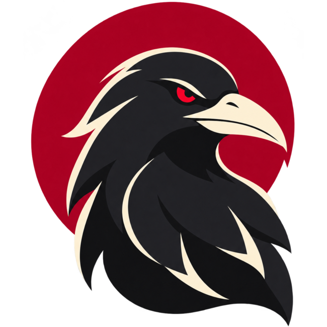

Başlangıç
Terminal kısayolları
Ctrl + Alt + A ile Kage’nin araç aramasını aç.
Temel terminal komutlarını denetle
kage-terminal-kontrol

Kage OS Debian belgeleriCtrl + Alt + A ile Kage’nin araç aramasını aç.
Temel terminal komutlarını denetle
kage-terminal-kontrol